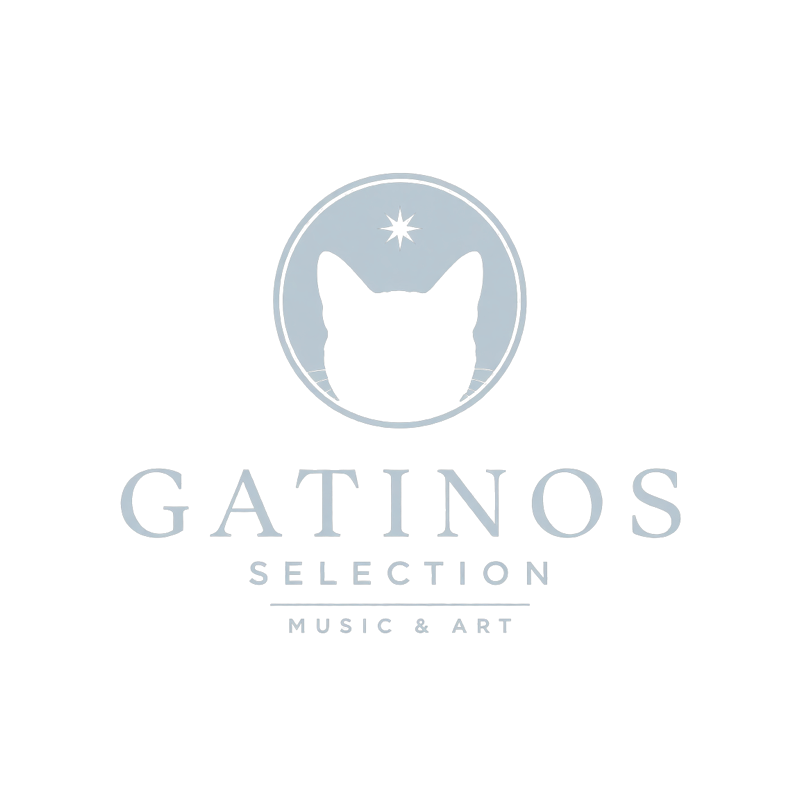

Gatinos Selection — Music & Art

Art Edition 01
Zwölf Tinten-Zeichnungen — als Motivdruck auf Shirts.
Der Shop öffnet in Kürze
eine Mail, eine Antwort, kein Abo

Art Edition 01
Zwölf Tinten-Zeichnungen — als Motivdruck auf Shirts.
Der Shop öffnet in Kürze
eine Mail, eine Antwort, kein Abo